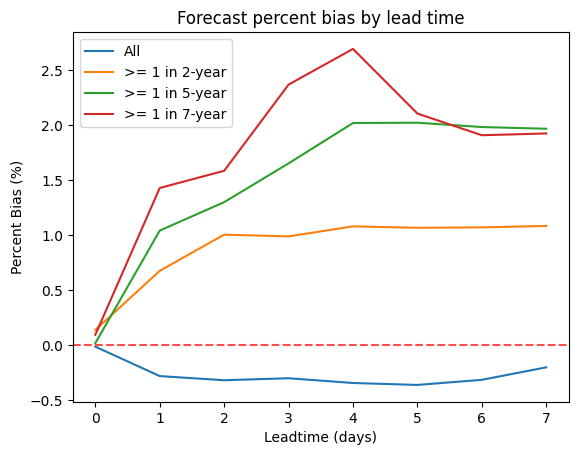

Code
%load_ext jupyter_black
%load_ext autoreload
%autoreload 2The jupyter_black extension is already loaded. To reload it, use:
%reload_ext jupyter_black
The autoreload extension is already loaded. To reload it, use:
%reload_ext autoreloadThis notebook investigates Google’s forecast skill at Wuro Bokki, Nigeria, and compares the reanalysis data against observational water level data from NiHSA.
%load_ext jupyter_black
%load_ext autoreload
%autoreload 2The jupyter_black extension is already loaded. To reload it, use:
%reload_ext jupyter_black
The autoreload extension is already loaded. To reload it, use:
%reload_ext autoreloadimport pandas as pd
import matplotlib.pyplot as plt
import matplotlib.dates as mdates
from src.datasources import nihsa, grrr
from src.utils import rp_calc
import xskillscore as xs
from dotenv import load_dotenv
load_dotenv()
HYBAS_ID = "hybas_1120842550"
HYBAS_ID_ = "hybas_1120842990" # Right at Wuro Bokki, but lower confidence
SAPPHIRE = "#007ce0"
TOMATO = "#f2645a"
TOMATO_DARK = "#c25048"
TOMATO_LIGHT = "#f7a29c"
MINT = "#1ebfb3"
GREY_DARK = "#888888"
GREY_LIGHT = "#cccccc"
# All years that include (very roughly) the flood season
NH_YEARS_PEAKS = [
1982,
1983,
1988,
1989,
1991,
1992,
1993,
2006,
2007,
2021,
2013,
2016,
2018,
2019,
2020,
2021,
2023,
]
# And only more recent years as there seems to be a trend in increasing water level
NH_YEARS_RECENT_PEAKS = [
2006,
2007,
2021,
2013,
2016,
2018,
2019,
2020,
2021,
2023,
]ds_ra = grrr.load_reanalysis()
df_ra = grrr.process_reanalysis(ds_ra)
ds_rf = grrr.load_reforecast()
df_rf = grrr.process_reforecast(ds_rf)
ds_return_periods = grrr.load_return_periods()/Users/hannahker/Desktop/ds-aa-nga-flooding/src/datasources/grrr.py:12: FutureWarning: In a future version of xarray decode_timedelta will default to False rather than None. To silence this warning, set decode_timedelta to True, False, or a 'CFTimedeltaCoder' instance.
return xr.open_zarr(Get the Google-derived return periods
return_periods_dict = {}
for var_name in ds_return_periods.data_vars:
return_periods_dict[int(var_name.split("_")[-1])] = ds_return_periods[
var_name
].item()
df_rp = pd.DataFrame([return_periods_dict])
df_rp = (
df_rp.T.reset_index()
.rename(columns={"index": "return_period", 0: "streamflow"})
.sort_values("return_period", ascending=True)
)Now estimate return periods directly from the reanalysis data
return_periods = df_rp["return_period"]
df_rp_calculated = rp_calc.estimate_return_periods(
df_ra,
date_col="valid_time",
val_col="streamflow",
target_rps=list(return_periods),
)Now plot both return periods
plt.plot(
df_rp["return_period"],
df_rp["streamflow"],
"o-",
c=TOMATO,
label="Google Return Periods",
)
plt.plot(
df_rp_calculated["return_period"],
df_rp_calculated["value"],
"o-",
c=SAPPHIRE,
label="Calculated Return Periods from Reanalysis",
)
plt.xlabel("Return Period")
plt.ylabel("Streamflow (m$^3$/s)")
plt.title("Streamflow return periods from GRRR product")
plt.legend()
plt.savefig(
f"temp/{HYBAS_ID}_return_periods.png", dpi=300, bbox_inches="tight"
)
plt.show()How well does the forecast match the model?
fig1, ax1 = plt.subplots()
fig2, ax2 = plt.subplots()
def percent_bias(obs, pred):
return 100.0 * sum(pred - obs) / sum(obs)
df_ra = df_ra.rename(columns={"streamflow": "streamflow_ra"})
df_rf = df_rf.rename(columns={"streamflow": "streamflow_rf"})
df_merged = df_rf.merge(df_ra, how="left")
for rp in [None, 2, 5, 7]:
if rp:
thresh = float(
df_rp_calculated.loc[
df_rp_calculated["return_period"] == rp, "value"
].iloc[0]
)
df_merged = df_merged[df_merged["streamflow_rf"] >= thresh]
df_bias = (
df_merged.groupby("leadtime")
.apply(
lambda x: percent_bias(x["streamflow_ra"], x["streamflow_rf"]),
include_groups=False,
)
.reset_index(name="percent_bias")
)
dimension_cols = ["issue_time", "valid_time", "leadtime"]
data_vars = ["streamflow_rf", "streamflow_ra"]
indexed_df = df_merged.set_index(dimension_cols)
ds = indexed_df[data_vars].to_xarray()
df_skill = (
ds.xs.mape(
"streamflow_ra",
"streamflow_rf",
dim=["issue_time", "valid_time"],
skipna=True,
)
.to_series()
.reset_index()
.rename(columns={0: "mape"})
)
label = f">= 1 in {rp}-year" if rp else "All"
ax1.plot(
df_skill["leadtime"],
df_skill["mape"] * 100,
label=label,
)
ax2.plot(
df_bias["leadtime"],
df_bias["percent_bias"],
label=label,
)
ax1.legend()
ax1.set_xlabel("Leadtime (days)")
ax1.set_ylabel("Mean Absolute Percent Error (%)")
ax1.set_title("Forecast error across leadtimes")
fig1.savefig(
f"temp/{HYBAS_ID}_forecast_mape.png", dpi=300, bbox_inches="tight"
)
ax2.legend()
ax2.axhline(y=0, color="r", linestyle="--", alpha=0.7)
ax2.set_xlabel("Leadtime (days)")
ax2.set_ylabel("Percent Bias (%)")
ax2.set_title("Forecast percent bias by lead time")
fig2.savefig(
f"temp/{HYBAS_ID}_forecast_bias.png", dpi=300, bbox_inches="tight"
)
df_nh = nihsa.load_wuroboki().rename(columns={"time": "valid_time"})How well is the GRRR reanalysis data correlated with observational water levels at Wuro Boki?
df_merged = (
df_nh.merge(df_ra, how="left")
.dropna()
.rename(columns={"streamflow_ra": "streamflow"})
)Let’s first break down by year
station_name = "Wuroboki"
dis_max = df_merged["streamflow"].max()
level_max = df_merged["level"].max()
n_years = df_merged["valid_time"].dt.year.nunique()
ncols = 4
nrows = round(n_years / ncols)
fig, axes = plt.subplots(
nrows=nrows, ncols=ncols, figsize=(ncols * 5, nrows * 3)
)
axes = axes.flatten()
year_correlations = {}
for j, year in enumerate(df_merged["valid_time"].dt.year.unique()):
dff = df_merged[df_merged["valid_time"].dt.year == year]
ax = axes[j]
ax2 = ax.twinx()
ax.plot(
dff["valid_time"],
dff["level"],
color=SAPPHIRE,
label="NiHSA\n(mm, left axis)",
)
ax.set_ylim(bottom=0, top=level_max * 1.1)
ax2.plot(
dff["valid_time"],
dff["streamflow"],
color=TOMATO,
label="GRRR\n(m$^{3}$/s, right axis)",
)
ax2.set_ylim(bottom=0, top=dis_max * 1.1)
pearson_r = dff["level"].corr(dff["streamflow"], method="pearson")
spearman_r = dff["level"].corr(dff["streamflow"], method="spearman")
year_correlations[year] = {
"pearson_r": pearson_r,
"spearman_r": spearman_r,
}
if pearson_r < 0.5 and spearman_r < 0.5:
bbox_col = "#ffa694" # Roughly which ones have bad relationship
else:
bbox_col = "white"
ax.text(
0.05,
0.95,
f"Pearson r: {pearson_r:.2f}\nSpearman r: {spearman_r:.2f}",
transform=ax.transAxes,
verticalalignment="top",
bbox=dict(boxstyle="round", facecolor=bbox_col),
)
ax.xaxis.set_major_locator(mdates.MonthLocator())
ax.xaxis.set_major_formatter(mdates.DateFormatter("%b"))
ax.set_title(year)
fig.suptitle(
f"Comparison of NiHSA and GRRR reanalysis for {station_name.capitalize()}",
fontsize=16,
y=1,
)
plt.savefig(
f"temp/{HYBAS_ID}_nihsa_correlation.png", dpi=300, bbox_inches="tight"
)
plt.tight_layout()Now look at overall
pearson_corr = df_merged["level"].corr(
df_merged["streamflow"], method="pearson"
)
spearman_corr = df_merged["level"].corr(
df_merged["streamflow"], method="spearman"
)
print(f"\nOverall Pearson correlation: {pearson_corr:.4f}")
print(f"Overall Spearman correlation: {spearman_corr:.4f}")
plt.figure(figsize=(10, 6))
plt.scatter(df_merged["streamflow"], df_merged["level"], alpha=0.1, c=SAPPHIRE)
plt.title("Water Level vs Streamflow")
plt.xlabel("Streamflow (m$^{3}$/s)")
plt.ylabel("Water level")
plt.savefig(
f"temp/{HYBAS_ID}_nihsa_correlation_overall.png",
dpi=300,
bbox_inches="tight",
)
plt.show()
Overall Pearson correlation: 0.3084
Overall Spearman correlation: 0.3453Let’s start by calculating the yearly peaks
# First let's only take the observational data since 1980
# to match with the reanalysis
df_nh = df_nh[df_nh["valid_time"] > "1980-01-01"]
# Also fill in all the date gaps with null values for better plotting
date_range = pd.date_range(
start=df_nh["valid_time"].min(),
end=df_nh["valid_time"].max(),
freq="D",
)
df_nh_complete = pd.DataFrame({"valid_time": date_range})
df_nh_complete = df_nh_complete.merge(df_nh, on="valid_time", how="left")df_nh_peaks = (
df_nh.groupby(df_nh["valid_time"].dt.year.rename("year"))
.agg(
level_max=("level", "max"),
level_max_date=(
"level",
lambda x: df_nh.loc[x.idxmax(), "valid_time"],
),
)
.reset_index()
)
df_nh_peaks_recent = df_nh_peaks[df_nh_peaks.year.isin(NH_YEARS_PEAKS)]For the observational data
rp_2_nh = df_nh_peaks_recent["level_max"].quantile(1 - 1 / 2)
rp_5_nh = df_nh_peaks_recent["level_max"].quantile(1 - 1 / 5)
rp_7_nh = df_nh_peaks_recent["level_max"].quantile(1 - 1 / 7)
fig, ax = plt.subplots(figsize=(25, 6))
ax.plot(df_nh_complete["valid_time"], df_nh_complete["level"], c=GREY_DARK)
ax.axhline(rp_2_nh, c=SAPPHIRE, label="1 in 2 rp")
ax.axhline(rp_5_nh, c=MINT, label="1 in 5 rp")
ax.axhline(rp_7_nh, c=TOMATO, label="1 in 7 rp")
mask_rp2 = df_nh_peaks["level_max"] >= rp_2_nh
mask_rp5 = df_nh_peaks["level_max"] >= rp_5_nh
mask_rp7 = df_nh_peaks["level_max"] >= rp_7_nh
ax.scatter(
df_nh_peaks.loc[mask_rp2 & ~mask_rp5, "level_max_date"],
df_nh_peaks.loc[mask_rp2 & ~mask_rp5, "level_max"],
c=SAPPHIRE,
s=60,
label="Exceeds 1 in 2 rp",
)
ax.scatter(
df_nh_peaks.loc[mask_rp5 & ~mask_rp7, "level_max_date"],
df_nh_peaks.loc[mask_rp5 & ~mask_rp7, "level_max"],
c=MINT,
s=60,
label="Exceeds 1 in 5 rp",
)
ax.scatter(
df_nh_peaks.loc[mask_rp7, "level_max_date"],
df_nh_peaks.loc[mask_rp7, "level_max"],
c=TOMATO,
s=60,
label="Exceeds 1 in 7 rp",
)
ax.set_ylabel("Water level")
ax.set_title("Return period exceedance in NiHSA observations")
plt.savefig(f"temp/nihsa_rp_exceedance.png", dpi=300, bbox_inches="tight")
plt.legend()For the reanalysis data
df_ra_peaks = (
df_ra.groupby(df_ra["valid_time"].dt.year.rename("year"))
.agg(
sf_max=("streamflow_ra", "max"),
sf_max_date=(
"streamflow_ra",
lambda x: df_ra.loc[x.idxmax(), "valid_time"],
),
)
.reset_index()
)rp_2_ra = df_ra_peaks["sf_max"].quantile(1 - 1 / 2)
rp_5_ra = df_ra_peaks["sf_max"].quantile(1 - 1 / 5)
rp_7_ra = df_ra_peaks["sf_max"].quantile(1 - 1 / 7)
fig, ax = plt.subplots(figsize=(25, 6))
ax.plot(df_ra["valid_time"], df_ra["streamflow_ra"], c=GREY_DARK)
ax.axhline(rp_2_ra, c=SAPPHIRE, label="1 in 2 rp")
ax.axhline(rp_5_ra, c=MINT, label="1 in 5 rp")
ax.axhline(rp_7_ra, c=TOMATO, label="1 in 7 rp")
mask_rp2 = df_ra_peaks["sf_max"] >= rp_2_ra
mask_rp5 = df_ra_peaks["sf_max"] >= rp_5_ra
mask_rp7 = df_ra_peaks["sf_max"] >= rp_7_ra
ax.scatter(
df_ra_peaks.loc[mask_rp2 & ~mask_rp5, "sf_max_date"],
df_ra_peaks.loc[mask_rp2 & ~mask_rp5, "sf_max"],
c=SAPPHIRE,
s=30,
label="Exceeds 1 in 2 rp",
)
ax.scatter(
df_ra_peaks.loc[mask_rp5 & ~mask_rp7, "sf_max_date"],
df_ra_peaks.loc[mask_rp5 & ~mask_rp7, "sf_max"],
c=MINT,
s=30,
label="Exceeds 1 in 5 rp",
)
ax.scatter(
df_ra_peaks.loc[mask_rp7, "sf_max_date"],
df_ra_peaks.loc[mask_rp7, "sf_max"],
c=TOMATO,
s=30,
label="Exceeds 1 in 7 rp",
)
ax.set_ylabel("Streamflow (m$^3$/s)")
ax.set_title("Return period exceedance in GRRR reforecast")
plt.savefig(f"temp/{HYBAS_ID}_rp_exceedance.png", dpi=300, bbox_inches="tight")
plt.legend()Now let’s look at the yearly peaks
df_all_peaks = df_nh_peaks.merge(df_ra_peaks, how="inner")
df_all_peaks = df_all_peaks[df_all_peaks.year.isin(NH_YEARS_PEAKS)]fig, ax = plt.subplots()
ax.scatter(df_all_peaks["sf_max"], df_all_peaks["level_max"], c="#007ce0")
for idx, row in df_all_peaks.iterrows():
ax.annotate(
row["year"],
(row["sf_max"] + 60, row["level_max"]),
ha="center",
va="center",
fontsize=8,
c="#007ce0",
)
ax.axvline(rp_5_ra, lw=0.5, c=TOMATO)
ax.axhline(rp_5_nh, lw=0.5, c=TOMATO)
ax.set_ylim(bottom=0, top=df_all_peaks["level_max"].max() * 1.1)
ax.set_xlim(left=0, right=df_all_peaks["sf_max"].max() * 1.1)
ax.set_xlabel("Reanalysis yearly peak (m$^{3}$/s)")
ax.set_ylabel("Observational yearly peak")
ax.set_title("Yearly peaks in reanalysis and observational data")
plt.savefig(f"temp/{HYBAS_ID}_yearly_peaks.png", dpi=300, bbox_inches="tight")
plt.tight_layout()def determine_detection_type(row, rp_5_nh, rp_5_ra):
happened = row["level_max"] > rp_5_nh
detected = row["sf_max"] > rp_5_ra
if happened and detected:
return "TP" # True Positive
elif not happened and detected:
return "FP" # False Positive
elif not happened and not detected:
return "TN" # True Negative
else:
return "FN" # False Negative
def get_more_stats(TP, FP, FN):
precision = TP / (TP + FP)
recall = TP / (TP + FN)
f1 = 2 / ((1 / recall) + (1 / precision))
return precision, recall, f1
df_all_peaks["detection_type"] = df_all_peaks.apply(
lambda row: determine_detection_type(row, rp_5_nh, rp_5_ra), axis=1
)counts = df_all_peaks["detection_type"].value_counts().to_dict()counts{'TN': 11, 'FN': 3, 'FP': 2}if "TP" not in counts.keys():
counts["TP"] = 0Division by zero here… makes sense since there’s no TPs…
precision, recall, f1 = get_more_stats(
counts["TP"], counts["FP"], counts["FN"]
)--------------------------------------------------------------------------- ZeroDivisionError Traceback (most recent call last) Cell In[31], line 1 ----> 1 precision, recall, f1 = get_more_stats( 2 counts["TP"], counts["FP"], counts["FN"] 3 ) Cell In[27], line 18, in get_more_stats(TP, FP, FN) 16 precision = TP / (TP + FP) 17 recall = TP / (TP + FN) ---> 18 f1 = 2 / ((1 / recall) + (1 / precision)) 19 return precision, recall, f1 ZeroDivisionError: float division by zero